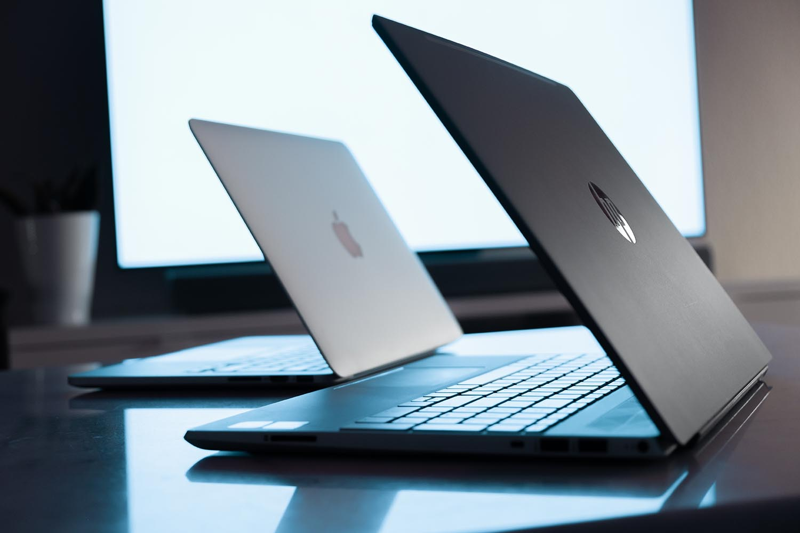
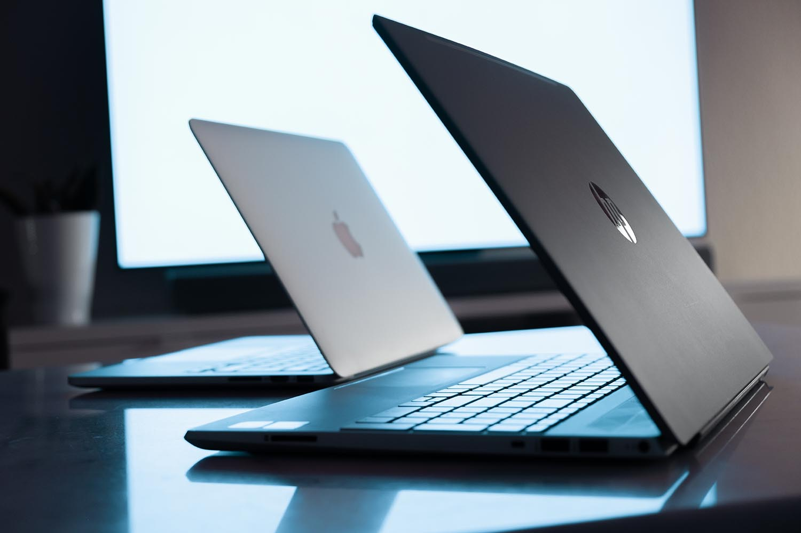

När det kommer till Medie-teknik så är det viktigt att veta att man kommer arbeta i program som
till exempel Adobes Illustrator eller Photoshop. Dessa program kan kräva en hel del utifrån din
dators
prestanda, därför att det viktigt att hitta en dator med bra komponenter som klarar jobbet
För att kunna använda både Photoshop och Illustrator på både Mac och Windows datorer krävs det minst 8gb RAM minne på din dator för att programmen ska fungera på en hyfsat bra nivå. Det rekommenderade valet av RAM minne till din dator skulle egentligen vara 16gb men det fungerar helt okej med 8gb. Man behöver även en processor med minst 2 ghz hastighet, för just Windows så spelar det inte jättestor roll om man har Intel eller AMD, båda fungerar
Om man jämför operativsystemen mellan Mac och Windows så ser man stora skillnader i prestanda och design. MacOs har en mer avrundad och minimalistisk ton i sin design medan Windows har en mer hård och kantig design. MacOs operativ system är väldigt gynnande om du har andra Apple produkter eftersom dessa samspelar väldigt effektivt med varandra.
De lärare som har undervisat under min nuvarande studietid i programmet Medieproduktion & Processdesign på Malmö Universitet har alla använt sig utav Mac-datorer. Det underlättar att kunna följa lärarnas undervisning när man har samma operativsystem. Detta gör det tydligt för studenten att följa steg för steg.

Om det är så att du vill köpa en Windows laptop så rekommenderar jag: Acer Chromebook Spin 713 13.5. Denna laptop kostar 7900kr och har 8gb minne samt en intel I3 processor me 2.1ghz hastighet vilket gör att man kan använda både Illustrator samt Photoshop med helt okej resultat. Denna laptop kan även ändras till en surfplatta vilket gör det effektivt om man skulle vilja illustrera eller rita direkt på datorn med antingen finger eller ritpenna. Kameran är bara i 720p men det funkar bra för enkla zoom-möten.
Om det är så att du vill köpa en Macbook, vilket är den bästa rekommendationen så skulle jag rekommendera att köpa den senaste Macbook Pro med det nya M1-chippet vilket gör att prestandan på din dator blir utmärkt. Det är inte nödvändigt att uppgradera datorn till 16gb RAM minne utan det funkar bra med 8gb eftersom den senaste MacOs i samband med det nya M1-chippet klarar både Illustrator och Photoshop utan problem. Kameran är även dock bara i 720p men det funkar bra för enkla zoom-möten, har aldrig haft några problem med kameran. Jag kan även tycka att det räcker med 256gb ssd lagring då man kan använda sig utav iClouds lagring och även andra sorters online lagring som till exempel Google Drive.
Slutligen landar priset för en helt ny Macbook Pro 13 Tum kring cirka 15.000kr - 16.000 kr. Detta är en saftig summa pengar som inte alla är redo att lägga på en laptop. Det är dock en dator man kommer använda under en lång period utöver studierna, till exempel i framtida jobb. Då är denna dator perfekt för dig och alltså även en investering. Det finns andra bra alternativ som exempelvis Macbook Air som man även kan hålla utkik efter. Det finns bra erbjudanden som student på Mecenat webbsida där de har specifika erbjudanden för just Apple produkter som Ipad, AirPods och MacBooks.
För att kunna använda både Photoshop och Illustrator på både Mac och Windows datorer krävs det minst 8gb RAM minne på din dator för att programmen ska fungera på en hyfsat bra nivå. Det rekommenderade valet av RAM minne till din dator skulle egentligen vara 16gb men det fungerar helt okej med 8gb. Man behöver även en processor med minst 2 ghz hastighet, för just Windows så spelar det inte jättestor roll om man har Intel eller AMD, båda fungerar
Om man jämför operativsystemen mellan Mac och Windows så ser man stora skillnader i prestanda och design. MacOs har en mer avrundad och minimalistisk ton i sin design medan Windows har en mer hård och kantig design. MacOs operativ system är väldigt gynnande om du har andra Apple produkter eftersom dessa samspelar väldigt effektivt med varandra.
De lärare som har undervisat under min nuvarande studietid i programmet Medieproduktion & Processdesign på Malmö Universitet har alla använt sig utav Mac-datorer. Det underlättar att kunna följa lärarnas undervisning när man har samma operativsystem. Detta gör det tydligt för studenten att följa steg för steg.

Vad är då bäst?
Jag skulle rekommendera att köpa en Macbook istället för Windows. En MacBook är däremot oftast väldigt mycket dyrare än en Windows-dator, så jag tänker nu jämföra och visa vad det finns för billigare alternativ, som fungerar åtminstone lika bra.Om det är så att du vill köpa en Windows laptop så rekommenderar jag: Acer Chromebook Spin 713 13.5. Denna laptop kostar 7900kr och har 8gb minne samt en intel I3 processor me 2.1ghz hastighet vilket gör att man kan använda både Illustrator samt Photoshop med helt okej resultat. Denna laptop kan även ändras till en surfplatta vilket gör det effektivt om man skulle vilja illustrera eller rita direkt på datorn med antingen finger eller ritpenna. Kameran är bara i 720p men det funkar bra för enkla zoom-möten.
Om det är så att du vill köpa en Macbook, vilket är den bästa rekommendationen så skulle jag rekommendera att köpa den senaste Macbook Pro med det nya M1-chippet vilket gör att prestandan på din dator blir utmärkt. Det är inte nödvändigt att uppgradera datorn till 16gb RAM minne utan det funkar bra med 8gb eftersom den senaste MacOs i samband med det nya M1-chippet klarar både Illustrator och Photoshop utan problem. Kameran är även dock bara i 720p men det funkar bra för enkla zoom-möten, har aldrig haft några problem med kameran. Jag kan även tycka att det räcker med 256gb ssd lagring då man kan använda sig utav iClouds lagring och även andra sorters online lagring som till exempel Google Drive.
Slutligen landar priset för en helt ny Macbook Pro 13 Tum kring cirka 15.000kr - 16.000 kr. Detta är en saftig summa pengar som inte alla är redo att lägga på en laptop. Det är dock en dator man kommer använda under en lång period utöver studierna, till exempel i framtida jobb. Då är denna dator perfekt för dig och alltså även en investering. Det finns andra bra alternativ som exempelvis Macbook Air som man även kan hålla utkik efter. Det finns bra erbjudanden som student på Mecenat webbsida där de har specifika erbjudanden för just Apple produkter som Ipad, AirPods och MacBooks.
Våra rekommendationer:
Mac-Dator:
Macbook Pro 2020 13 Tum: M1-Chip , 8gb RAM minne, 256gb SSD-lagring:15 995 kr
Windows-Dator:
Acer Chromebook Spin 713 13.5 Tum: Intel Core i3, 8gb RAM minne, 128gb eMMC-flashlagring, pekskärm:7900 kr